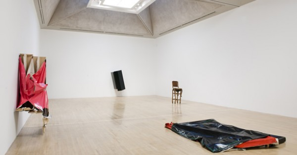
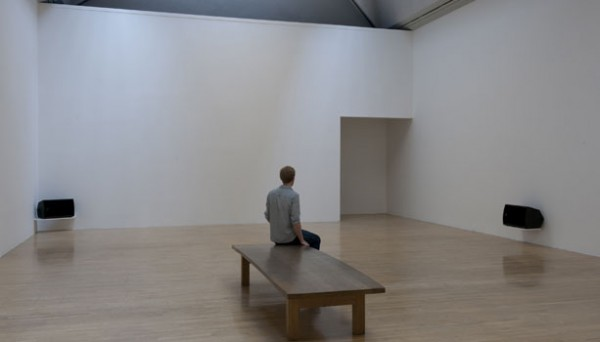

-
Architectures of Silence: The Turner at The Tate
by Kari Rittenbach December 8, 2010
A demonstrator at Tate Britain. Via
The Turner Prize – that most infamous of awards – is named for the Romantic landscape painter J.M.W. Turner, who once expressed a desire to establish a fund for controversial young artists. In 1984, a group calling itself ‘Patrons of New Art’ remembered him when developing a scheme to support contemporary British art with new purchases for the Tate Gallery, creating the prize that bears his name. Its prestige accompanied by a cash payment of twenty-five thousand pounds, the award requires only that its winner be under fifty, be British (or working in Britain), and to have staged a solo show in the UK within the past twelve months. As the most substantial art prize in the country, it places the recipient center stage overnight, vaunting him or her, but usually him, into the esteemed (and internationally recognized) company of Gilbert & George, Rachel Whiteread, Mark Wallinger, and Grayson Perry. Meanwhile, the mystically undemocratic selection-by-jury-of-experts has inspired dissent from alternative arts groups critical of its byzantine machinations.
In other words, the Turner creates a high degree of visibility beyond the usual concentric artworld circles. This attention is amplified by the UK’s notorious celebrity-industrial complex, which places as much emphasis on producing fame as it does on dressing it down. Chris Ofili’s No Woman No Cry, (1998), Damien Hirst’s The Physical Impossibility of Death in the Mind of Someone Living (1991) and Tracey Emin’s terribly messy My Bed (1999) were all shown in the official exhibition of short-listed candidates, with both Ofili and Hirst going on to win. Held annually in the pristine halls of the Tate, and often received with spectacular consternation and varying degrees of antipathy, these shows have cemented the Prize’s reputation as an annual view – in the style of Turner – of the British (contemporary art) landscape.
The Nominees
Dexter Dalwood, The Death of David Kelly, 2008. Via
Dexter Dalwood
Born in Bristol, Dalwood is a collage artist working primarily with oil and canvas. That is to say, his scenic imagery is lifted from art-historical, pop cultural, and more recently political sources (The Death of David Kelly), resulting in a queasy postmodern mish-mash that is left figuratively – and sometimes pictorially – unresolved (the absent protagonist, the suddenly ruptured spatial ground) in precisely the ways that painting once sought to overcome. If Dalwood transgresses this technical effort he does so while remaining firmly within representation, in a style rife with “culturally interesting” image quotation. The bedrooms of Jimi Hendrix, Michael Jackson, and Bill Gates perform as tantalizing subjects imagined in unvarying bright colors, spackled over here and there with Cubist or AbEx touches and even clearly recognizable signatures—for instance, a retaining wall that mimics Jasper John’s White Flag . His flattening, even overdetermined, treatment feels ill-suited to painting—reviving all sorts of neatly fictionalized history but not the genre’s urgency.
The Otolith Group
Gods and heroes will seek asylum in art collections like political refugees in foreign embassies. —Chris Marker
Anjalika Sagar and Kodwo Eshun (who lectures at Goldsmiths) are hip to both geopolitics and the hyper-intellectualized lingo of the academic Left, considering their collective output to be Marker’s postcolonial heir-apparent.
Their film-essay Otolith III provides a speculative contemporary setting cut together with old Bollywood footage, which exhumes The Alien (1967), an unrealized film by Indian director Satyajit Ray about a small Bengali boy who encounters a kind extraterrestrial—a non-narrative narrative coyly toying with the meta-narrative of cinematic history. The duo’s explorations of microgravity as the loss of ground, orientation, balance, and stability that developmentally impacts the otoliths of the inner ear are often enchanting, more often pedantic, but always come fully equipped with theoretical armature eschewing any need for further commentary:
To turn away from monofocal visions of gravity towards complex narratives that embed agravic time-space within multiple notions of time, space and event necessitates a much more sophisticated approach towards the moving image. – Eshun, A Long Time Between Suns
Angela de la Cruz installation at Tate Britain, Via
Angela de la Cruz
The Spanish-born de la Cruz trained at the Slade as a sculptor, although she has been classified in her Turner cohort as one of (an astonishing) two painters. In fact she is a sculptor who can’t stop painting, then sacrilegiously pushing, pulling, crumpling, re-stretching and finally tearing the canvas and wooden frames of her monochromatic pictures completely apart and then wrapping, folding, warping and bolting them back together again. In the materiality of three dimensions (mass, volume, form), de la Cruz cleverly navigates the problem of representation, producing curiously expressive, even neurotic objects that are as much about suffering and pain as they are “paintings behaving badly.” Whereas a dirty white Homeless shrinks ashamedly into a corner, Still Life (Table) contains all of the objects painstakingly arranged on the table top and the table too; a pinched form with protruding wooden legs engulfed by shiny black canvas. For de la Cruz, painting may be “over” but its semiotics must still be reckoned with. Her (de)constructions, if irresolute, are unapologetically feminine.
Susan Philipsz
Born in Glasgow but now based in Berlin, Philipsz studied sculpture (at Dundee) and afterward turned to sound. For Filter she crooned a cover version of Radiohead’s “Airbag,” unaccompanied, into the PA system at a Tesco supermarket. Her Turner Prize-nominated piece featured an arrangement of the 16th-Century Scottish lament “Lowlands Away” — describing a lover drowned at sea — which reverberated beneath three bridges spanning the River Clyde during the Glasgow International Festival of Visual Art. Transported to an empty room at the Tate, Philipsz’s installation was certainly tranquilized for easy listening – although the hollow contemporary setting renders the textured historical ballad somehow more mournful. Playing asynchronously from triangulated speakers set low against the gallery walls, it composes a collective soundscape in which the ever-ubiquitous headphones are finally unnecessary. Philipsz considers the ways in which sound defines architecture, making the full character of its spaces available to our experience; a simple enough premise nevertheless alien to listeners, who clustered near to the wall text before branching further into the room.
Winner
Philipsz accepted the Turner Prize from Miuccia Prada on Tuesday evening— the first sound artist and fourth woman to win the award. The disgruntled complained that a visual art award had been given away for a song.
Loser(s)
Leading up to Thursday’s scheduled Parliamentary vote on the plan to triple University fees across England, some 200 students occupied the entrance hall of Tate Britain to capitalize on the media turnout. This was the latest in a series of continued protests against the coalition government’s proposed cuts to arts and education. Divided from the assembled prize audience by a temporary barricade, the students almost drowned out the presentation of Philipsz’s award.
Susan Philipsz sound installation at the Tate, via
Tate director Sir Nicholas Serota remarked encouragingly on their presence noting that “art schools have been laboratories for the kind of work that has gone on to win the Turner prize” and The Otolith Group’s Anjalika Sagar tailored her acceptance speech into a semi-provocative statement of support for the students whose brittle welfare state shattered so easily. Can a winter of discontent be waged effectively by immaterial laborers in an information age? At this point, and from this perspective, the landscape for those artists below forty appears puzzling, savage, and dramatically bleak.